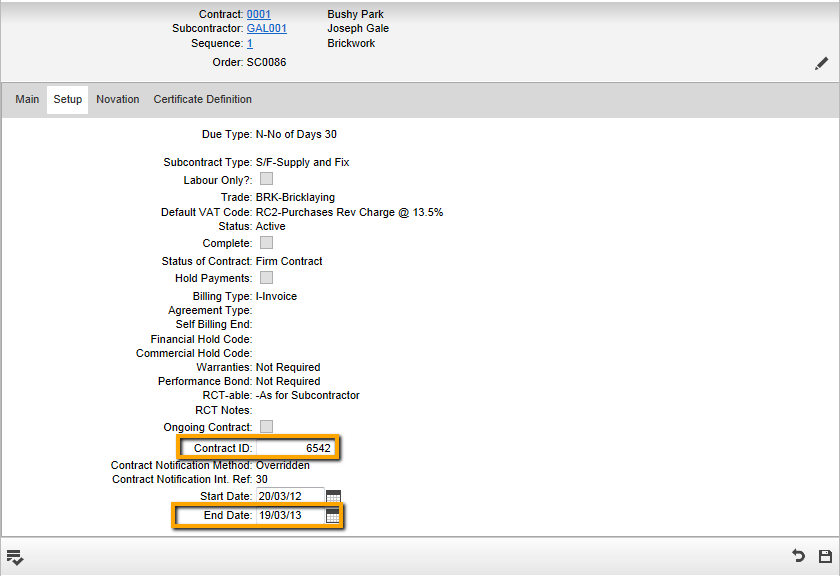

Manual Contract Notification
If you are using v10.22 or v10.23, you will need to notify Relevant Contracts using ROS, and record in the fact that the contract has been notified. You may also choose to do this for some or all Relevant Contracts even if you are using a later version of .
To update notification details for a subcontract manually:
- Notify the contract on ROS.
- Open the subcontract record in Subcontract Maintenance.
You can use Subcontract RCT Details Review/Update if you find it more convenient.
- If this subcontract is part of an ongoing contract for the subcontractor then just the Ongoing Contract box as this subcontract does not then need to be notified separately. Otherwise fill in the following fields:
- Contract ID: This is the unique identifier for the Relevant Contract as allocated by Revenue at Contract Notification. This needs to be included in the Payment Notification for every payment under that contract.
- End Date of Work (End Date field): This is mandatory for subcontracts which are Relevant Contracts as Payment Notifications will not be accepted by Revenue more than six months after the end date.
(Where a subcontract takes longer than initially envisaged, the end date can be changed using the Amend Contract Registration process on ROS, and then the amended date should be recorded in .) will issue a warning message when transactions are processed after the end date.
